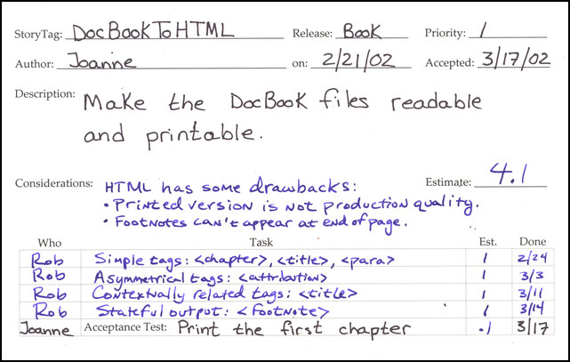

about Extreme Programming
with Perl
| Previous: Chapter 14: Refactoring | |||
Implementing Extreme Perl is a simple matter of programming. Practicing XP clarifies its values. Perl's virtues come alive as you read and write it. The subject matter language crystallizes as the subject matter oriented program evolves along with the programmers' mastery of the problem domain. This chapter coalesces the book's themes (XP, Perl, and SMOP) into a single example: a DocBook XML to HTML translator. We walk through the planning game, split the story into tasks, discuss coding style, design simply, pair program, test first, and iterate. The subject matter oriented program (SMOP) is a hash of XML to HTML tags interpreted by a declarative algorithm. Along the way, declarative programming is defined and related to other paradigms (object-oriented and imperative programming). The ProblemThe example in this chapter converts DocBook XML[1] (the source form of this book) to HTML. The example went beyond this chapter, and the version here was enhanced to produce the review copies for the entire book.[2] DocBook is a technical document description language. I described the paragraphs, sections, terms, etc. of this book with tags as follows: <blockquote><para> To learn about <firstterm>XML</firstterm>, visit <systemitem role="url">http://www.w3c.org/XML</systemitem>. </para></blockquote> It's unreadable in source form, and my resident reviewer in chief pointed this out after I asked her to review the first chapter in source form. She was expecting something like this:
Since eating your own dog food is a great way to make sure it's palatable, my resident reviewer in chief agreed to act as the on-site customer[3] for a DocBook to HTML translator. I am happy to say she is satisfied with the output of the program.[4] Planning GameThe planning game was brief. There was only one story card (shown completed): 
Note the simplicity of the story. One sentence is usually sufficient to describe the problem. During the planning game, we decided almost immediately the output would be HTML. We briefly discussed simply stripping the XML tags to produce a plain text document. We dropped this idea quickly, because the output would not be very easy to read, for example, footnotes would appear in the middle of the text. We touched on alternative formatting languages, such as, Rich Text Format (RTF), but the simplicity of HTML and its relatedness to XML made the decision for us. HTML provides enough formatting to give a sense of the layout, which is all Joanne needed to read and print the chapters. Dividing the Story into TasksWe already had a chapter as a sample input. This made it easy to define the tasks. I needed the tasks to be bite-sized chunks, because my programming partners were only available for brief periods. The task split was simple. I scanned the chapter looking for problematic tags. The first task specifies simple tags. The other tasks specify one problematic tag each. Only DocBook tags used in the chapter were included, and each tag can be found in at least one test case. Coding StyleThe story card does not mention declarative programming. It also doesn't specify what language, operating system, or hardware is to be used. The customer simply wants readable and printable chapters. She doesn't care how we do it. Too often we begin coding without an explicit discussion about how we're going to code, that is. what language and what style. For this project, we chose Perl for the following reasons:
The last reason is important to list. One of the core values of XP is communication. By listing my personal motivation, I'm being honest with my team. Miscommunication often comes from hidden agendas. Simple DesignThe problem lends itself to simplicity. XML and HTML are declarative languages, and an important property of declarative languages is ease of manipulation. For example, consider the following DocBook snippet: <para> <classname>XML::Parser</classname> parses XML into a tree. </para> The relationships are clear, and the mapping to HML is simply: <p> <tt>XML::Parser</tt> parses XML into a tree. </p> One could translate the tags with a simple tag for tag mapping, such as: This design is too simple, however. It assumes the XML is well-formed, which it often isn't when I write it. For example, if I were to leave off </classname>, the closing </tt> would be missing in the HTML, and the output would be in tt font for the rest of the document. The classic response to this is: garbage in, garbage out. However, we did better without added complexity[5], and the solution evolved with minimal changes. We favored hubris and impatience over doing the simplest thing that could possibly work. A little chutzpah is not bad every now and then as long as you have benchmarks to measure your progress. If the implementation size grew too rapidly, we would have backed off to the simpler solution. If we blew our task estimates, we'd have to ask if we didn't under-estimate the complexity of the more radical approach. The design we chose starts with the output of the CPAN package, XML::Parser. If the XML is not well-formed, XML::Parser dies. There is no output when the input is garbage. XML::Parser preserves the semantic structure of the input. The translation is an in-order tree traversal, so the output is likely to be well-formed HTML, which also is a tree. Imperative versus DeclarativeTo help understand the benefits of declarative languages, let's consider an alternate problem. Suppose I was writing this book in troff[6], an imperative text formatting language: .PP \fBXML::Parser\fR parses XML into a tree. The commands in troff are not relational. The .PP does not bracket the paragraph it introduces. troff interprets the .PP as a paragraph break, and what follows need not be a paragraph at all. The command is imperative, because it means do something right now irrespective of context. The \fB and \fR commands do not relate to the value they surround, either. \fB turns on bold output, and \fR turns off all emphasis statefully. Drop one or the other, and the troff is still well-formed. troff commands are unrelated to one another except by the order in which they appear in the text. Writing a troff parser is straightforward. The complete grammar is not much more complicated than the example above. Translating troff to HTML is much more difficult.[7] For example, consider the following troff: \fBXML::Parser\fI is sweet!\fR The equivalent HTML is: <b>XML::Parser</b><i> is sweet!</i> A simple command-to-tag translation is insufficient. The program must maintain the state of the font in use, and output the corresponding closing tag (</b>) when the font changes before appending the font tag (<i>). The same is true for font sizes, indentation level, line spacing, and other stateful troff commands. The program has to do two jobs: map commands to tags and emulate the state management of troff. As you'll see, the XML to HTML translator does not maintain global input state to perform its job. The XML tags are translated based on minimal local context only. The only relational information required is the parent of the current tag. The mapping is stateless and therefore simpler due to XML's declarativeness. Pair ProgrammingProgramming courses rarely mention declarative programming. Imperative programming is the norm. It is all too easy to use imperative forms out of habit or as a quick fix, especially when working alone under pressure. You may need to refactor several times to find appropriate declarative forms. Dogmatic pursuit of declarative forms is not an end in itself, however. Sometimes it's downright counter-productive. Since Perl allows us to program in multiple paradigms, it is tricky to choose how or when to program using objects, imperatively, and declaratively. For these reasons, it's helpful to program in pairs when coding declarative constructs. It takes time to learn how to code declaratively, just like it takes time to test-first, code simply, and refactor. The learning process is accelerated when you program in pairs. All tasks and tests in this chapter were implemented in pairs. I would like to thank Alex Viggio for partnering with me on the last three tasks and Justin Schell for helping with the first. Thanks to Stas Bekman for being my virtual partner in the final refactoring-only iteration. Test First, By IntentionThe first task involves simple tags only. This allowed us to address the basic problem: mapping XML tags to HTML tags. Each XML tag in the first test case maps to zero, one, or two HTML tags. The first test case input is the trivial DocBook file: <chapter> <title>Simple Chapter</title> <simplesect> <para>Some Text</para> </simplesect> </chapter> Here's the expected result: <html><body> <h1>Simple Chapter</h1> <p>Some Text</p> </body></html> The test case input and expected result are stored in two files named 01.xml and 01.html, respectively. In my experience, it pays to put the test cases in a separate subdirectory (DocBook), and to check the test cases into the collective repository. If the program runs amok and overwrites these files, you can always retrieve them from the repository. Also, storing all the test data and programs in the repository ensures programmer workstations are stateless. This allows you to switch tasks and/or workplaces easily. The unit test program is: The function to_html takes a file name as an argument and returns a string reference, which simplifies testing. There is no need to create a temporary output file nor delete it when the test is over. A testable design is a natural outcome of test-first programming. Bivio::IO::File->read returns the contents of the file name passed to it. The output is a scalar reference. If the file does not exist or an I/O error occurs, the function dies. StatelessnessBivio::IO::File->read is stateless, or idempotent. It always does the same thing given the same arguments. This isn't to say the file that it reads is stateless. Files and I/O are stateful. Rather, the operation retains no state itself. If the underlying file does not change, exactly the same data is returned after each call. Many of Perl's I/O functions are stateful. For example, Perl's read returns different values when called with the same arguments, because it maintains an internal buffer and file pointer. Each call returns the current buffer contents and advances an internal buffer index, possibly filling the buffer if it is empty. If the underlying file changes between calls, the old buffered contents are returned regardless. read buffers the file (uses state) to improve performance (decrease time), and we pay a price: the data read may not match a valid file state (old and new states may be mixed). Bivio::IO::File->read cannot be used in all cases. Sometimes the file is too large to fit in memory, or the file may be a device that needs to be read/written alternately in a conversational mode. For our test program, Bivio::IO::File->read meets our needs, and the declarative operation simplifies the code and ensures data integrity.[8] In terms of XP, stateless programming supports unit testing. It is easier to test stateless than stateful operations. Internal state changes, such as caching results in buffers, multiply the inputs and outputs implicitly. It's harder to keep track of what you are testing. Stateful test cases must take ordering into account, and tests of implicit state changes make unit tests harder to read. Stateless APIs can be tested independently. You only need to consider the explicit inputs and outputs for each case, and the cases can be written in any order. The tests are easier to read and maintain. XML::ParserBefore we dive into the implementation, we need to understand the output of XML::Parser. It parses the XML into a tree that constrains our implementation choices. Given 01.xml, the following data structure is returned by parsefile: The tree structure is realized by nesting arrays. The first element in the array is a hash of attribute tags, which we can ignore for this first implementation, because 01.xml doesn't use XML attributes. The special tag 0 indicates raw text, that is, the literal strings bracketed by the XML tags. First SMOPThe implementation of the first task begins with the map from DocBook to HTML, which is the subject matter oriented program (SMOP): The subject matter (tags and their relationships) is expressed succinctly without much syntactic clutter.Perl's simple quoting comma (=>) describes the program's intention to replace the tag on the left with the list of tags on the right. As an exercise, try to translate this SMOP to another programming language. You'll find that Perl's expressiveness is hard to beat. First InterpreterThe SMOP above is known as descriptive declarativeness, just like HTML and XML. The primary advantage of descriptive languages is that they are easy to evaluate. The first interpreter is therefore quite short[9]: The execution is driven by the XML, not our SMOP. to_html starts the recursive (in order tree traversal) algorithm by calling parsefile with the appropriate arguments. The XML tree it returns is passed to _to_html. The tags are translated by the SMOP as they are encountered by _to_html_node, the workhorse of the program. The tag names in the SMOP are converted to HTML tags (surrounded by angle brackets, <>) by _to_html_tags. Functional ProgrammingThe subroutine _to_html_tags is a pure function, also known as a function without side effects. A pure function is a declarative operation, which is defined formally as follows [10]:
_to_html_tags only depends on its inputs. Its output (the HTML tags) is the only state change to the program. And, we expect it to do exactly the same thing every time we call it. Functional programming is the branch of declarative programming that uses pure functions exclusively. One of Perl's strengths is its functional programming support. For example, map and join allowed us to implement _to_html_tags functionally. Other Perl operations, such as foreach, support imperative programming only. Code that uses foreach must rely on stateful side-effects for its outputs. To illustrate this point, let's look at _to_html_tags implemented with foreach: The foreach does its job of iterating through $names, and nothing more. It abdicates any responsibility for achieving a result. The surrounding code must introduce a variable ($res) to extract the output from inside the loop. The variable adds complexity that is unnecessary in the functional version. Outside InLike most programmers, I was trained to think imperatively. It's hard to think declaratively after years of programming languages like C and Java. For example, _to_html in our first interpreter uses the imperative while, because a functional version didn't spring to mind. This was the simplest thing that could possibly work. It was Stas who suggested the functional refactoring in Final Implementation. Functional programming requires a paradigm shift from traditional imperative thinking. _to_html_tags_imperatively concatenates its result on the inside of the foreach. The functional _to_html_tags concatenates the result on the outside of the map. Functional programming is like turning an imperative program inside out.[11] Or, as some of my co-workers have noted, it's like programming while standing on your head. May I, Please?The inside out analogy helps us refactor. We can use it to simplify imperative programs. To program functionally from the outset, a different analogy may help: think in terms of requests, not demands. Paul Graham states this eloquently, "A functional program tells you what it wants; an imperative program tells you what to do."[12] When we apply this analogy to the example, we see that _to_html_tags_imperatively tells us it formats tag names one at a time, and it appends them to the end of a string. When its done with that, it'll return the result. The functional _to_html_tags has a list of tag names and wants a string to return, so it asks join, a function that conatenates a list into a string. join asks for a separator and a list of tags to concatenate. map wants to format tag names, so it asks for a formatter ({"<$prefix$_>"}) and a list of tag names. All we're missing is some polite phrases like please and may I, and we can expand this analogy to familial relationships. Imperative kids tell their parents, "I'm taking the car." Declarative kids politely ask, "May I borrow the car, please?". By communicating their desires instead of demands, declarative kids give their parents more leeway to implement their requests. Pure functions, and declarative programs in general, are more flexible than their imperative cousins. Instead of demanding a calling order that is implicitly glued together with state (variables), declarative programs define relationships syntactically. This reduces the problem of refactoring from an implicit global problem of maintaining state transitions to an explicit local one of preserving syntactic relationships. Functional programs are easier to refactor. Second TaskThe second task introduces asymmetric output. The test case input file (02.html) is: <chapter> <title>Chapter with Epigraph</title> <epigraph> <para> Representation <emphasis>is</emphasis> the essence of programming. </para> <attribution>Fred Brooks</attribution> </epigraph> <simplesect> <para>Some Text</para> </simplesect> </chapter> The output file (02.xml) we expect is: <html><body> <h1>Chapter with Epigraph</h1> <p> Representation <b>is</b> the essence of programming. </p> <div align=right>-- Fred Brooks</div> <p>Some Text</p> </body></html> The XML attribute tag doesn't map to a simple HTML div tag, so the existing SMOP language didn't work. But first we had to update the unit test. Unit Test MaintenanceTo add the new case to the unit test, we copied the line containing the first test case, and changed the the filenames: Woops! We fell into the dreaded copy-and-paste trap. The new line is identical to the old except for two characters out of 65. That's too much redundancy (97% fat and 3% meat). It's hard to tell the difference between the two lines, and as we add more tests it will be even harder. This makes it easy to forget to add a test, or we might copy-and-paste a line and forget to change it. We factored out the common code to reduce redundancy: This version of the unit test is maintenance free. The test converts all .xml files in the DocBook subdirectory. All we need to do is declare them, i.e., create the .xml and .html files. We can execute the cases in any order, so we chose to sort them to ease test case identification. Second SMOPWe extended the SMOP grammar to accommodate asymmetric output. The new mappings are shown below: attribution maps to a hash that defines the prefix and suffix. For the other tags, the prefix and suffix is computed from a simple name. We added _to_html_compile which is called once at initialization to convert the simple tag mappings (arrays) into the more general prefix/suffix form (hashes) for efficiency. Second SMOP InterpreterWe extended _to_html_node to handle asymmetric prefixes and suffixes. The relevant bits of code are: _to_html_compile makes _to_html_node simpler and more efficient, because it no longer calls _to_html_tags with the ordered and reversed HTML tag name lists. Well, I thought it was more efficient. After performance testing, the version in Final Implementation turned out to be just as fast.[13] The unnecessary compilation step adds complexity without improving performance. We added it at my insistence. I remember saying to Alex, "We might as well add the compilation step now, since we'll need it later anyway." Yikes! Bad programmer! Write "I'm not going to need it" one hundred times in your PDA. Even in pairs, it's hard to avoid the evils of pre-optimization. Spike SolutionsAs long as I am playing true confessions, I might as well note that I implemented a spike solution to this problem before involving my programming partners. A spike solution in XP is a prototype that you intend to throw away. I wrote a spike to see how easy it was to translate DocBook to HTML. Some of my partners knew about it, but none of them saw it. The spike solution affected my judgement. It had a compilation step, too. Programming alone led to the pre-optimization. I was too confident that it was necessary when pairing with Alex. Spike solutions are useful, despite my experience in this case. You use them to shore up confidence in estimates and feasibility of a story. You write a story card for the spike, which estimates the cost to research possibilities. Spike solutions reduce risk through exploratory programming. Third TaskThe third task introduces contextually related XML tags. The DocBook title tag is interpreted differently depending on its enclosing tag. The test case input file (03.xml) is: [COMMENT: The following wastes printed pages. Should I trim the test cases or compact them to save printed pages?]The expected output file (03.html) is: The chapter title translates to an HTML h1 tag. The section title translates to an h2 tag. We extended our SMOP language to handle these two contextually different renderings of title. Third SMOPWe discussed a number of ways to declare the contextual relationships in our SMOP. We could have added a parent attribute to the hashes (on the right) or nested title within a hash pointed to by the chapter tag. The syntax we settled on is similar to the one used by XSLT.[14] The XML tag names can be prefixed with a parent tag name, for example, "chapter/title". The SMOP became: Third SMOP InterpreterWe refactored the code a bit to encapsulate the contextual lookup in its own subroutine: The algorithmic change is centralized in _lookup_op, which wants a tag and its parent to find the correct relation in the SMOP. Precedence is given to contextually related tags ("$parent_tag/$tag") over simple XML tags ($tag). Note that the root tag in to_html is the empty string (''). We defined it to avoid complexity in the lower layers. _lookup_op need not be specially coded to handle the empty parent tag case. The MetaphorThis task implementation includes several name changes. Alex didn't feel the former names were descriptive enough, and they lacked coherency. To help think up good names, Alex suggested that our program was similar to a compiler, because it translates a high-level language (DocBook) to a low-level language (HTML). We refactored the names to reflect this new metaphor. $_TO_HML became $_XML_TO_HTML_PROGRAM, and _to_html_compile to _compile_program. and so on. An $op is the implementation of an operator, and _lookup_op parallels a compiler's symbol table lookup. _eval_child evokes a compiler's recursive descent algorithm. The compiler metaphor helped guide our new name choices. In an XP project, the metaphor subsitutes for an architectural overview document. Continuous design means that the architecture evolves with each iteration, sometimes dramatically, but a project still needs to be coherent. The metaphor brings consistency without straitjacketing the implementation. In my opinion, you don't need a metaphor at the start of a project. Too little is known about the code or the problem. As the code base grows, the metaphor may present itself naturally as it did here. Fourth TaskThe fourth and final task introduces state to generate the HTML for DocBook footnotes. The test case input file (04.xml) is: <chapter> <title>Chapter with Footnotes</title> <simplesect> <para> Needs further clarification. <footnote><para> Should appear at the end of the chapter. </para></footnote> </para> <itemizedlist> <listitem><para> First item </para></listitem> <listitem><para> Second item </para></listitem> </itemizedlist> <para> Something about XML. <footnote><para> Click here <systemitem role="url">http://www.w3c.org/XML/</systemitem> </para></footnote> </para> <para> <classname>SomeClass</classname> <varname>$some_var</varname> <property>a_property</property> <filename>my/file/name.PL</filename> <citetitle>War & Peace</citetitle> <quote>I do declare!</quote> </para> </simplesect> </chapter> The expected output file (04.html) is: <html><body> <h1>Chapter with Footnotes</h1> <p> Needs further clarification. <a href="#1">[1]</a> </p> <ul> <li><p> First item </p></li> <li><p> Second item </p></li> </ul> <p> Something about XML. <a href="#2">[2]</a> </p> <p> <tt>SomeClass</tt> <tt>$some_var</tt> <tt>a_property</tt> <tt>my/file/name.PL</tt> <i>War & Peace</i> "I do declare!" </p> <h2>Footnotes</h2><ol> <li><a name="1"></a><p> Should appear at the end of the chapter. </p></li> <li><a name="2"></a><p> Click here <a href="http://www.w3c.org/XML/">http://www.w3c.org/XML/</a> </p></li> </ol> </body></html> The footnotes are compiled at the end in a Footnotes section. Each footnote is linked through HTML anchor tags (#1 and #2). Incremental indexes and relocatable output were the new challenges in this implementation. Fourth SMOPWe pulled another blade out of our Swiss Army chainsaw for this task. Perl's anonymous subroutines were used to solve the footnote problem. The subroutines bound to chapter and footnote use variables to glue the footnotes to their indices and the footnotes section to the end of the chapter. Here are the additions to the SMOP: We didn't see a simple functional solution. Although it's certainly possible to avoid the introduction of $clipboard, we let laziness win out over dogma. There was no point in smashing our collective head against a brick wall when an obvious solution was staring right at us. Besides, you've got enough functional programming examples already, so you can stop standing on your head and read this code right side up. Fourth SMOP InterpreterThe interpreter changed minimally: $clipboard is initialized as a reference to an empty hash by to_html. If $op is a CODE reference, _eval_op invokes the subroutine with $clipboard and the html generated by the children of the current tag. The anonymous subroutines bound to the tags can then use all of Perl to fulfill their mapping obligation. Object-Oriented Programming$clipboard is a reference to a simple hash. An alternative solution would be to instantiate Bivio::DocBook::XML, and to store footnote_idx and footnotes in its object fields. Objects are very useful, but they would be overkill here. To instantiate Bivio::DocBook::XML in Perl, it's traditional to declare a factory method called new to construct the object. This would clutter the interface with another method. We also have the option in Perl to bless a hash reference inline to instantiate the object. In either case, an objectified hash reference is more complex than a simple hash, and does not add value. The semantics are not attached to the hash but are embedded in the anonymous subroutines. Objects as simple state containers are unnecessarily complex. Additionally, object field values are less private than those stored in $clipboard. An object has fields to enable communication between external calls, for example, a file handle has an internal buffer and an index so that successive read calls know what to return. However, it's common to abuse object fields for intra-call communication, just like global variables are abused in structured languages (C, FORTRAN, Pascal, etc.). In most pure object-oriented languages, there's no practical alternative to object fields to pass multiple temporary values to private methods. Choice is one of Perl's strengths, and a simple hash localizes the temporary variable references to the subroutines that need them. Hashes and lists are the building blocks of functional programming. Perl and most functional languages include them as primitive data types. It's the simple syntax of a Perl hash that makes the SMOPs in this chapter easy to read. In many languages, constructing and using a hash is cumbersome, and SMOP languages like this one are unnatural and hard to read, defeating their purpose. In object-oriented programming, state and function are inextricably bound together. Encapsulating state and function in objects is useful. However, if all you've got is a hammer, every problem looks like a nail. In functional programming, state and function are distinct entities. Functional languages decouple function reuse from state sharing, giving programmers two independent tools instead of one. Success!The first iteration is complete. We added all the business value the customer has asked for. The customer can translate a complete chapter. Time for a victory dance! Yeeha! Now sit down and stop hooting. We're not through yet. The customer gave us some time to clean up our code for this book. It's time for a little refactoring. We missed a couple of things, and the code could be more functional. Virtual Pair ProgrammingThe second iteration evolved from some review comments by Stas. I wrangled him into partnering with me after he suggested the code could be more functional. The one hitch was that Stas lives in Australia, and I live in the U.S. Pair programming with someone you've never met and who lives on the other side of the world is challenging. Stas was patient with me, and he paired remotely before.[15] His contribution was worth the hassle, and I learned a lot from the experience. The fact that he lived in Australia was an added bonus. After all, he was already standing on his head from my perspective, and he was always a day ahead of me.
Deviance TestingWe forgot to test for deviance in the prior iteration. XML::Parser handles missing or incomplete tags, so we don't need to test for them here. The unit test should avoid testing other APIs to keep the overall test suite size as small as possible. However, XML::Parser treats all tags equally, and Bivio::XML::DocBook should die if a tag is not in the SMOP. We added the following test (05-dev.xml) to validate this case: <chapter> <unknowntag></unknowntag> </chapter> The case tests that _lookup_op throws an exception when it encounters unknowntag. The unit test had to change to expect a die for deviance cases. We also made the code more functional: The map inside the sort returns the case base names (DocBook/01, DocBook/05-dev, etc.), and the outer map reconstructs the filenames from them. This purely functional solution is shorter than the previous version. If the case file name matches the /dev/ regular expression, the map declares the deviance case by returning a Bivio::DieCode as the expected value. Otherwise, the input file is conformant, and the map returns the expected HTML wrapped in an array. Bivio::Test lets us declare deviance and conformance cases similarly. When picking or building your test infrastructure, make sure deviance case handling is built in. If it's hard to test APIs that die, you'll probably write fewer tests for the many error branches in your code. Final ImplementationThe final SMOP and interpreter are shown together with comments, and POD, and changes highlighted: To keep the explanation brief and your attention longer, here are the list of changes we made in the order they appear above:
Separate ConcernsThis completes the second and final iteration of our DocBook XML to HTML translator. The second iteration didn't change anything the customer would notice, but it improved the program's quality. Pride of craftsmanship is a motivating factor for most people. The customer benefits directly when programmers are giving the freedom to fix up their code like this. Quality is the intangible output of motivated people. Craftsmanship plays a role in many professions. For example, one of my favorite pastimes is baking bread. It's hard to bake well. There are so many variables, such as, ambient temperature, humidity, and altitude. A skilled baker knows how to balance them all. Anybody can bake bread by following a recipe. Just buy the ingredients, and follow the step-by-step instructions. These days even inexpensive kitchen appliances can do it. While fresh bread from a bread machine tastes fine, it wouldn't win a competition against a skilled baker. My bread wouldn't either, but I might beat out a bread machine. Becoming a skilled baker takes practice. Following a recipe isn't enough. Indeed, most good bakers instinctively adjust the recipe for temperature, humidity, altitude, and so on. They probably won't follow the instructions exactly as written either. A simple recipe tells them what the customer wants, that is, the ingredient combination, but the know how of a good baker would fill a book. When you separate the what from the how, you get qualitative differences that are impossible to specify. In the case of our translator, the SMOP is the what and the interpreter is the how. The quality is the succinctness of the mapping from DocBook to HTML. The program is less than 100 lines of Perl without documentation, and we can add new mappings with just one line. You can't get more concise than that. XP achieves quality by asking the customer what she wants and allowing programmers to implement it the best they know how. The feedback built in to XP gives the customer confidence that she's getting what she wants, much like the feedback from testing tells the programmers the code does what they want. In plan-driven methodologies, the lines between the what and the how are blurred. Specifications are often an excuse for the customers and analysts to attempt to control how the programmers code. While the aim is to ensure quality, the result is often the opposite. The programmers act like unthinking automatons following the specifications to the letter, even when they know the spec is wrong. The programmers are craftsmen, and XP respects their knowledge and experience. The customer is also a craftsmen, and XP teaches programmers to respect her skills, too. XP separates concerns to allow people to excel at their jobs. Travel LightWhen two craftsmen communicate, you don't hear much. Acronyms abound. Their common experience lets them skip over the details lay people need spelled out for them, like a recipe. Perl, XP, and SMOP are terse. In Perl, you don't call the regular_expression function, you say //. A skilled Perl programmer reads and writes // instinctively. An XP customer writes brief story cards without a thought about whether the programmers will understand them. She knows the programmers will ask for elaboration. There's no need for big fat stateful specifications and programs to slow down the pipeline from the customer to the programmers to the computer to deliver value to the users. An experienced traveler knows that the more baggage you carry, the harder it is to change planes, switch trains, and climb mountains. Extreme Perl works best when you drop those bags, and hit the ground running. Brief plans change easily when reality happens. Concise code adapts to changed plans rapidly. Travel light, and get there faster. Footnotes
|
|||
| Previous: Chapter 14: Refactoring | |||
Licensed under a Creative Commons Attribution 4.0 International License.